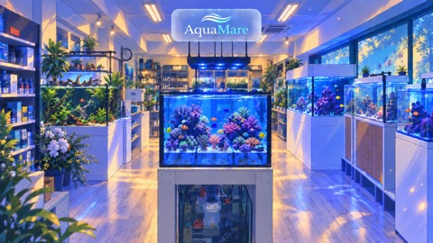

RUNBIRD ／ AI動画事業
AquaMare
AI動画 1本目 モックアップ
モック動画
1本目
熱帯魚・サンゴ専門店 AquaMare ／ 来店・集客訴求
58.6秒 ／ 1920×1080 ／ 音声なし（人物・魚の動きは動画化済み、ナレーション未収録）
冒頭は最初のフレームから鮮明な水槽映像で始め、一目で「熱帯魚・サンゴ専門店」であることが伝わる作りにしています。 直後に店内の雰囲気そのままに中央へ小さくロゴを提示し、YouTube広告として視聴者にスキップされやすい最初の数秒でブランドが伝わる構成です。
ダウンロード演出のキモ
- 冒頭0秒から鮮明な水槽映像でAquaMareの業態を一目で伝え、直後に店内＋ロゴを提示 ぼかし演出は廃止し、最初のフレームから鮮明なサンゴ・海水魚水槽を見せることで「何のお店か」が即座に伝わるようにしています。あわせて「札幌に、」→「札幌に、本物の」→「札幌に、本物のサンゴ礁を。」と段階的に積み上がるキャッチフレーズを表示（阿蘇ブルーベリーオーシャンファームCMのテロップ演出を参考）。続けて店内の雰囲気映像に中央の小さいロゴ看板を同居させ、単体カードにはせず「綺麗な店内映像＋ブランド」を一瞬で伝える構成です。YouTube広告として視聴者にスキップされやすい最初の数秒でお店の魅力とブランドが伝わるよう配置しています。
- 専門学校での講義シーンで権威性を示す 「ホワイトボードを使って学生に教えている方が、一目で『先生っぽい・知識がありそう』と伝わる」というお話を受け、専用シーンを設けました。
- 3パターンの顧客像で「誰のための店か」を描く 家族（イソギンチャク＋カクレクマノミ＋ナンヨウハギの3点セット）／単身の個人事業主（緑基調・カージナルテトラ等）／50代後半夫婦（キイロハギ・3秒の短尺カット）と、魚種まで描き分けています。
- 実際のAquaMareロゴをアニメ版に再構成し、冒頭と着地の両方に使用 ご共有いただいた実ロゴ（波のシンボル＋Aqua/Mare2色分けのワードマーク）を、フォトリアルのまま使うと動画全体のアニメタッチと違和感が出るため、同じデザイン・配色・スペルを保ったままアニメセル塗りで再構成。冒頭（S1直後）と着地（S12直後）の両方に配置し、ブランドの印象付けを二重にしています。
- 「遠隔サポート」と「来店して見せる」を混同しない 単身男性のシーンは、「休日にお店に来てもらって、スマホで『今こういう感じなんだよ』って見せてくれる」に忠実な来店・対面のシーンとして設計しています。
- CTAはInstagram一本に統一 QRコード・YouTubeバナーの遷移先ともInstagramに統一。住所・電話番号はそのまま掲載、営業時間は「Instagramでご確認ください」表記に統一しています。
構成・台本（15シーン＋CTA／58.6秒）
| # | 秒 | 映像 | テロップ |
|---|---|---|---|
| S1 | 0:00-0:04 | （実動画化）水槽の魚が泳ぎ光がゆらめく実写アニメ動画。キャッチフレーズを段階的に積み上げ表示 | 札幌に、→札幌に、本物の→札幌に、本物のサンゴ礁を。 |
| S1b | 0:04-0:07 | 店内（S12）の雰囲気そのまま、中央上部に小さくロゴを看板のように配置（静止画） | 熱帯魚・サンゴ専門店 → AquaMareロゴ |
| S2 | 0:07-0:11 | （実動画化）単身男性30代、一人部屋でスマホを見る（瞬き等の自然な動き） | 一人の時間、なんだか物足りない |
| S3 | 0:11-0:15 | （実動画化）父親が困り顔、息子はスマホに夢中、母親は奥に | 子どもと何を一緒に楽しもう |
| S4 | 0:15-0:19 | （実動画化）専門学校の実習室、ホワイトボードを手で示しながら学生に講義する横田さん | 専門学校で講師も務める、確かな知識 |
| S5 | 0:19-0:23 | （実動画化）AquaMare店内、横田さんが水槽を手で示しながら案内 | 専門知識で、はじめての一歩を全力サポート |
| S6 | 0:23-0:27 | （実動画化）単身男性が店内で水草水槽（カージナルテトラ等）を眺め表情が和らぐ | 一人でも、じっくり楽しめる趣味に |
| S7 | 0:27-0:31 | （実動画化）家族3人が海水魚水槽（イソギンチャク・カクレクマノミ・ナンヨウハギ）を見て息子が指差す | 家族みんなで夢中になれる |
| S8 | 0:31-0:35 | （実動画化）50代後半夫婦がリーフタンク（キイロハギ）を眺める | — |
| S9 | 0:35-0:39 | （実動画化）横田さんが個人宅で水槽をふくメンテナンス動作 | 設置からメンテナンスまで、 解決するまでずっと伴走 |
| S10 | 0:39-0:43 | （実動画化）単身男性が休日に来店し、スマホで自宅水槽を横田さんに見せる（対面・来店シーン） | 「今こんな感じなんだよ」がうれしい時間 |
| S11 | 0:43-0:47.6 | 3カット畳みかけ：家族／単身男性／夫婦（静止画） | にぎやかに／自分だけの趣味に／会話が増えました、 旦那が留守の日も |
| S12 | 0:47.6-0:51.6 | （実動画化）店内引きの全景、複数の水槽で魚がゆっくり泳ぐ | — |
| S12b | 0:51.6-0:54.6 | AquaMareロゴ（アニメ版）へフェードイン（着地・静止画） | —（ロゴ画像そのもの） |
| S13 | 0:54.6-0:58.6 | エンドカード（静止画） | AquaMare／instagram: @aquamare_japan 北海道札幌市中央区南2条西24丁目2-17 カワムラビル 1階 090-3116-5765／営業時間はInstagramでご確認ください |
シーン画像（アニメ風／新海誠風）

S1
水槽フック

S1b
店内＋中央ロゴ看板＋事業紹介

S2
単身男性・Problem

S3
家族・Problem

S4
専門学校の講義（追加）

S5
店主・店内案内

S6
単身男性・店内

S7
家族・店内（クマノミ+ナンヨウハギ）

S8
夫婦（キイロハギ）

S9
個人宅メンテナンス

S10
来店・スマホで近況報告

S12
店内全景
S12b
ロゴ（アニメ版）
参考にした動画
業態が直接通じるもの（熱帯魚・サンゴ・アクアリウム関連の実在CM）を優先して選定しています。
阿蘇ブルーベリーオーシャンファーム テレビCM
お打ち合わせでお話に出た「阿蘇ブルーベリーオーシャンファーム型のテレビCM風」はこの動画です。 実際の背景映像に、中央へ小さく丸みを帯びた看板状のロゴが同居する構図が特徴的で、S1bのロゴ演出（店内映像＋中央の小さいロゴ看板）はこの構図を参考にしています。
ART AQUARIUM MUSEUM GINZA×TOOBOE コラボCM
ART AQUARIUM MUSEUM アートアクアリウム美術館 / YouTubeで見る
初期案では「冒頭がすごく印象深い」との評価を受けてこの動画のぼかし技法をS1フックに移植していましたが、 「最初から何のお店かわかるようにしたい」というご意向を受け、現在はぼかし演出を廃止し、最初のフレームから鮮明なサンゴ・海水魚水槽を見せる形に変更しています。
君の名は。×サントリー 南アルプスの天然水 アニメCM
新海誠／コミックス・ウェーブ・フィルム / YouTubeで見る
ヒアリングシート指定の「アニメ風（新海誠風）」の絵作り参考。水・光の透明感の演出をシーン画像に反映しています。
ご確認いただきたい点
- 全体の構成・流れはこの方向性で進めて問題ないか
- 気になるシーン・修正したい点があれば、シーン番号でお知らせください
- 尺・ナレーションの有無や声質・BGMのイメージにご希望があればお知らせください 現状は尺58.6秒・ナレーションなし。人物・魚の動きは実際に動画化済み、ナレーション・BGMのみ未収録の段階です。
ご準備いただきたい素材
お手数ですが、以下の写真をご準備いただけますと幸いです：
①ホワイトボードで学生に講義している様子 ②個人宅でのメンテナンス・設置の様子 ③Tシャツを着用したお写真